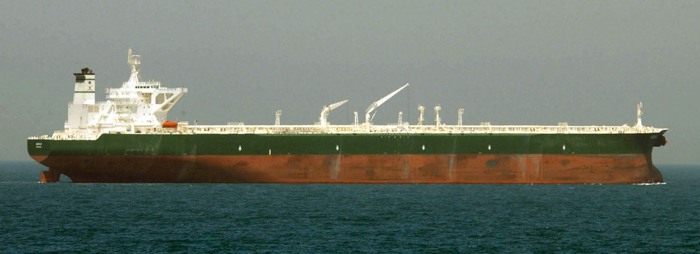

Задача трёх тел · глава 28 из 35
Вторая база «Красного берега»

Кратко
Е Вэньцзе привозят на «Судный день» — переоборудованный танкер в Атлантике, ставший второй базой «Красного берега». Эванс подтверждает: с Трисолярисом установлена связь, их флот уже вылетел и прибудет примерно через 450 лет. Е соглашается стать главнокомандующей Организации Земля—Трисолярис, и члены ОЗТ хором скандируют лозунг: «Уничтожим тиранию человечества! Мир принадлежит Трисолярису!».
Главные моменты
- Танкер «Судный день» — плавучий узел связи с иным миром.
- 450 лет до прибытия флота: угроза отдалённая, но неизбежная.
- Лозунг ОЗТ о «тирании человечества».
Значение
ОЗТ из идеи становится организацией с флотом, деньгами и прямым каналом связи с Трисолярисом. Е Вэньцзе — её духовный лидер, но не хозяин.